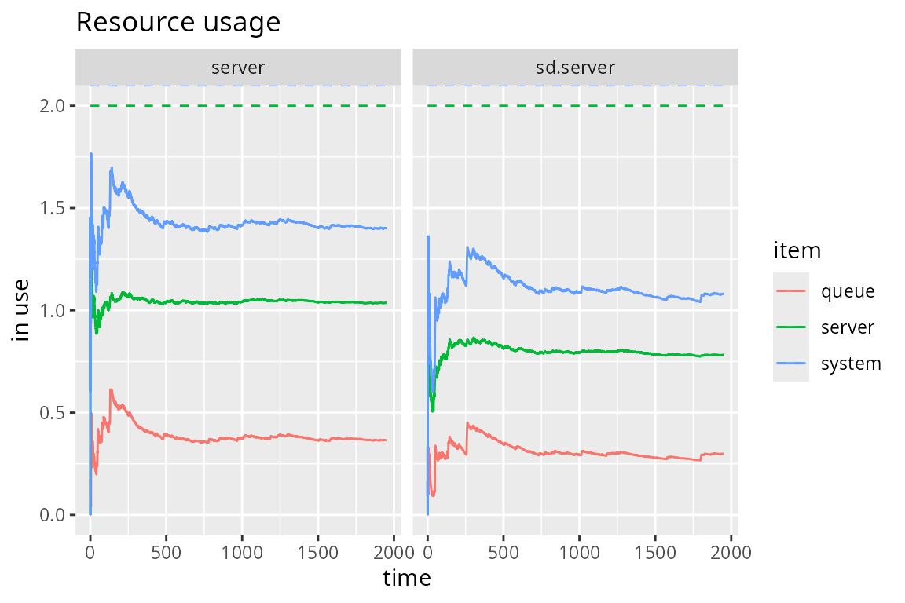

Queueing Systems
Iñaki Ucar
2023-11-28
Source:vignettes/simmer-06-queueing.Rmd
simmer-06-queueing.Rmd
library(simmer)
library(simmer.plot)
set.seed(1234)M/M/c/k systems
In Kendall’s notation, an M/M/c/k system has exponential arrivals (M/M/c/k), a \(c\) servers (M/M/c/k) with exponential service time (M/M/c/k) and an \(k-c\) positions in queue (M/M/c/k). For instance, a router may have several processors to handle packets, and the in/out queues are necessarily finite.
This is the simulation of an M/M/2/3 system (2 server, 1 position in queue). Note that the trajectory is identical to an M/M/1 system (one server, infinite queue).
lambda <- 3
mu <- 4
m.queue <- trajectory() %>%
seize("server", amount=1) %>%
timeout(function() rexp(1, mu)) %>%
release("server", amount=1)
mm23.env <- simmer() %>%
add_resource("server", capacity=2, queue_size=1) %>%
add_generator("arrival", m.queue, function() rexp(1, lambda)) %>%
run(until=2000)There are rejections when the queue is full.
get_mon_arrivals(mm23.env) %>%
with(sum(!finished) / length(finished))
#> [1] 0.04253894By solving the balance equations for this system, we obtain the following:
\[ \begin{aligned} p_0 &= \left[ \sum_{n=0}^{c-1}\frac{r^n}{n!} + \sum_{n=c}^{k}\frac{r^n}{c!c^{n-c}} \right]^{-1}\\ N &= \sum_{n=0}^{\infty}nP_n = p_0\left(\sum_{n=0}^{c-n}\frac{nr^n}{n!} + \sum_{n=c}^{k}\frac{nr^n}{c!c^{n-c}}\right) \end{aligned} \]
where \(r=\lambda/\mu\). Finally, we can see how the simulation quickly converges to the theoretical average number of customers in the system \(N\):
# Theoretical value
rho <- lambda/mu
div <- 1 / c(1, 1, factorial(2) * 2^(2:3-2))
mm23.N <- sum(0:3 * rho^(0:3) * div) / sum(rho^(0:3) * div)
# Evolution of the average number of customers in the system
plot(get_mon_resources(mm23.env), "usage", "server", items="system") +
geom_hline(yintercept=mm23.N)
Custom service policies
Resources implement a FIFO (or FCFS) priority queue, which means that
arrivals with a higher priority are processed first, and among those
with the same priority, the first-in-first-out policy applies. These
priorities can be statically assigned to all arrivals coming from a
particular source (using the priority argument in
add_generator() or a dedicated column in the data frame
passed to add_dataframe()).
However, there is a useful activity to change priorities dynamically
(as well as the other two prioritization values, preemtible
and restart), and that is
set_prioritization(). Such an activity allows us, for
example, to implement a LIFO queue just by assigning an increasing
priority to incoming arrivals:
env <- simmer()
lifo <- trajectory() %>%
set_global("resource prio", 1, mod="+") %>%
set_prioritization(function() c(get_global(env, "resource prio"), NA, NA)) %>%
seize("resource") %>%
log_("processing") %>%
timeout(5) %>%
release("resource")
env %>%
add_resource("resource") %>%
add_generator("dummy", lifo, at(0:4)) %>%
run() %>% invisible()
#> 0: dummy0: processing
#> 5: dummy4: processing
#> 10: dummy3: processing
#> 15: dummy2: processing
#> 20: dummy1: processingThis mechanism, together with signaling, serves as the basis to implement any custom servicing policy. The main idea is to signal whenever an arrival is going to release the resource so that all the arrivals in the queue can leave the queue momentarily to recompute their priorities:
env <- simmer()
custom <- trajectory() %>%
set_attribute("arrival time", function() now(env)) %>%
renege_if(
"recompute priority",
out = trajectory() %>%
# e.g., increase priority if wait_time < 3
set_prioritization(function() {
if (now(env) - get_attribute(env, "arrival time") < 3)
c(1, NA, NA) # only change the priority
else c(NA, NA, NA) # don't change anything
}, mod="+") %>%
# go 2 steps back to renege_if
rollback(2)) %>%
seize("resource") %>%
renege_abort() %>%
log_("processing") %>%
timeout(5) %>%
# trigger this before releasing the resource
send("recompute priority") %>%
timeout(0) %>%
release("resource")
env %>%
add_resource("resource") %>%
add_generator("dummy", custom, at(0:4)) %>%
run() %>% invisible()
#> 0: dummy0: processing
#> 5: dummy3: processing
#> 10: dummy4: processing
#> 15: dummy1: processing
#> 20: dummy2: processingNote that a null timeout was added so that the resource is released in the last place. In this way, all arrivals recompute their priorities and enter the queue again before the resource is released.
State-dependent service rates
In many practical queueing scenarios, the speed of the server depends
on the state of the system. Here we consider a multi-server resource
that is able to distribute the processing capacity evenly among the
arrivals. This means that if, for example, capacity=2 and
there is a single arrival in the server, it would be served twice as
fast.
In terms of a simulation model, a state-dependent service rate implies that the time spent in the server must be asynchronously updated each time an arrival seizes or releases the resource. In consequence, first we need to define a trajectory that updates a running service delay and restarts the new time left to release the resource. The following trajectory assumes that three attributes are available:
-
start: simulation time at which the arrival started the lasttimeoutactivity. -
multiplier: distribution of the processing capacity. -
delay: service delay applied to the lasttimeoutactivity.
The new delay is the time left scaled by the last and new multipliers.
update.delay <- trajectory() %>%
set_attribute(c("start", "multiplier", "delay"), function() {
# previous multiplier, service time left
multiplier <- get_attribute(env, "multiplier")
left <- sum(get_attribute(env, c("start", "delay"))) - now(env)
# distribute processing capacity
new_multiplier <- capacity / get_server_count(env, "sd.server")
# return new values
c(now(env), new_multiplier, left * multiplier / new_multiplier)
}) %>%
timeout_from_attribute("delay")The main trajectory below first seizes the server and initialises the
three attributes. Then, the arrivals need to follow the
update.delay trajectory and must be interrupted at any
given time to re-run it, thus re-computing the service time left. In
simmer, this can be done with some signaling (see
help(trap)): a signal is subscribed and
update.delay is registered as a handler. The first
send signals the arriving entity, causing all the arrivals
to execute the handler. Eventually, the handler finishes and the
execution path returns to unregister the handler, release the server and
signal the departing entity.
sd.queue <- trajectory() %>%
seize("sd.server") %>%
# initialisation
set_attribute(c("start", "multiplier", "delay"), function()
c(now(env), 1, rexp(1, mu))) %>%
# set the handler
trap("update delay", handler=update.delay) %>%
# the following null timeout is required to act as a priority "fence"
# and get a properly ordered set of simultaneous events
# (see https://groups.google.com/g/simmer-devel/c/SkOcpu12sT8/m/xG8p5nmTAAAJ)
timeout(0) %>%
# trigger the handler
send("update delay") %>%
# returning point
untrap("update delay") %>%
release("sd.server") %>%
send("update delay")In the following, we compare an M/M/2 with this state-dependent system. Both systems are fed with the same interarrival times and, as expected, the average resource usage is significantly reduced.
lambda <- mu <- 4
capacity <- 2
arrivals <- data.frame(time=rexp(2000*lambda, lambda))
env <- simmer() %>%
# M/M/2
add_resource("server", capacity) %>%
add_dataframe("arrival", m.queue, arrivals) %>%
# state-dependent service rate
add_resource("sd.server", capacity) %>%
add_dataframe("sd.arrival", sd.queue, arrivals)
env %>%
run() %>%
get_mon_resources() %>%
plot(metric="usage", c("server", "sd.server"))
Queueing Networks
Let us consider the following network of queues (example taken from Grotto Networking):

There are three exponential generators (\(\lambda_1\), \(\lambda_2\), \(\lambda_4\)) that inject messages with exponential size of mean 100 bytes. There are four M/D/1 queues with a deterministic rate equal to 220 bytes/s. There is a 25% probability that messages from \(\lambda_1\) are dropped before the second queue, and a fork 35/65% for the output of the second queue to reach queues 3 and 4. We are interested, for instance, in the accumulated waiting time for messages entering queue 1 and exiting queue 3 or 4.
We’ll start by setting up the main constants and a couple of functions to set the message size and seize an M/D/1 queue:
mean_pkt_size <- 100 # bytes
lambda1 <- 2 # pkts/s
lambda3 <- 0.5 # pkts/s
lambda4 <- 0.6 # pkts/s
rate <- 2.2 * mean_pkt_size # bytes/s
# set an exponential message size of mean mean_pkt_size
set_msg_size <- function(.)
set_attribute(., "size", function() rexp(1, 1/mean_pkt_size))
# seize an M/D/1 queue by id; the timeout is function of the message size
md1 <- function(., id)
seize(., paste0("md1_", id), 1) %>%
timeout(function() get_attribute(env, "size") / rate) %>%
release(paste0("md1_", id), 1)The next step is to set up the three points of attachment for our generators:
to_queue_1 <- trajectory() %>%
set_msg_size() %>%
md1(1) %>%
leave(0.25) %>%
md1(2) %>%
branch(
function() (runif(1) > 0.65) + 1, continue=c(F, F),
trajectory() %>% md1(3),
trajectory() %>% md1(4)
)
to_queue_3 <- trajectory() %>%
set_msg_size() %>%
md1(3)
to_queue_4 <- trajectory() %>%
set_msg_size() %>%
md1(4)Finally, we prepare and run the simulation environment with the resources and generators required:
env <- simmer()
for (i in 1:4) env %>%
add_resource(paste0("md1_", i))
env %>%
add_generator("arrival1_", to_queue_1, function() rexp(1, lambda1), mon=2) %>%
add_generator("arrival3_", to_queue_3, function() rexp(1, lambda3), mon=2) %>%
add_generator("arrival4_", to_queue_4, function() rexp(1, lambda4), mon=2) %>%
run(4000)
#> simmer environment: anonymous | now: 4000 | next: 4000.0322040152
#> { Monitor: in memory }
#> { Resource: md1_1 | monitored: TRUE | server status: 1(1) | queue status: 0(Inf) }
#> { Resource: md1_2 | monitored: TRUE | server status: 1(1) | queue status: 3(Inf) }
#> { Resource: md1_3 | monitored: TRUE | server status: 1(1) | queue status: 0(Inf) }
#> { Resource: md1_4 | monitored: TRUE | server status: 0(1) | queue status: 0(Inf) }
#> { Source: arrival1_ | monitored: 2 | n_generated: 8079 }
#> { Source: arrival3_ | monitored: 2 | n_generated: 2044 }
#> { Source: arrival4_ | monitored: 2 | n_generated: 2402 }In the analysis, we filter arrivals from generator 1 that reach queues 3 and 4, and we examine the average waiting time and the total number of messages:
res <- get_mon_arrivals(env, per_resource = TRUE) %>%
subset(resource %in% c("md1_3", "md1_4"), select=c("name", "resource"))
arr <- get_mon_arrivals(env) %>%
transform(waiting_time = end_time - (start_time + activity_time)) %>%
transform(generator = regmatches(name, regexpr("arrival[[:digit:]]", name))) %>%
merge(res)
aggregate(waiting_time ~ generator + resource, arr, function(x) sum(x)/length(x))
#> generator resource waiting_time
#> 1 arrival1 md1_3 5.1816915
#> 2 arrival3 md1_3 0.6969347
#> 3 arrival1 md1_4 4.9417576
#> 4 arrival4 md1_4 0.4751263
get_n_generated(env, "arrival1_") + get_n_generated(env, "arrival4_")
#> [1] 10481
aggregate(waiting_time ~ generator + resource, arr, length)
#> generator resource waiting_time
#> 1 arrival1 md1_3 3867
#> 2 arrival3 md1_3 2042
#> 3 arrival1 md1_4 2166
#> 4 arrival4 md1_4 2401